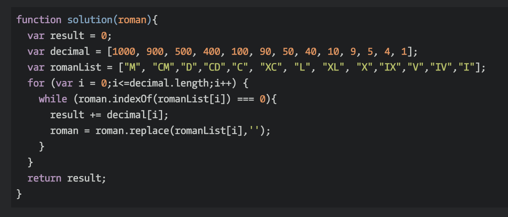
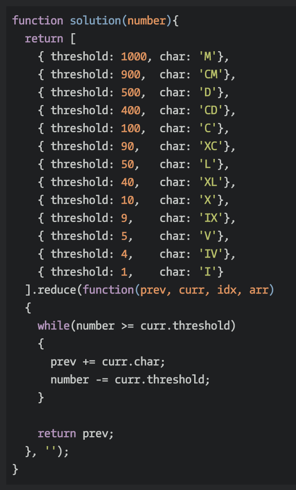
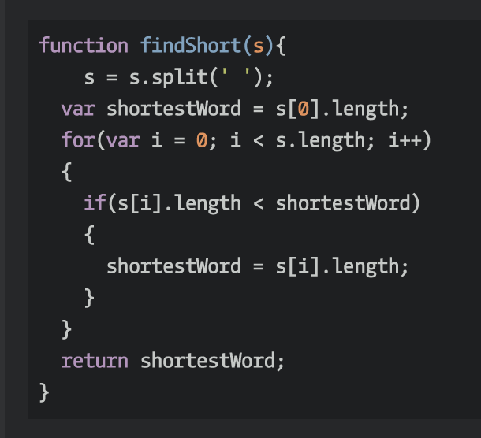
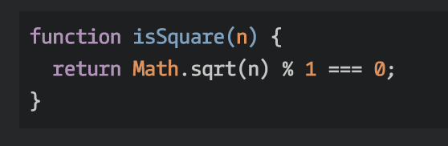

PlayGround.js
The History of JavaScript
JavaScript, often abbreviated as JS, is a high-level, dynamic, weakly typed, object-based, multi-paradigm, and interpreted programming language. Alongside HTML and CSS, JavaScript is one of the three core technologies of World Wide Web content production. It is used to make webpages interactive and provide online programs, including video games. In 1993, the National Center for Supercomputing Applications (NCSA), a unit of the University of Illinois at Urbana-Champaign, released NCSA Mosaic, the first popular graphical Web browser, which played an important part in expanding the growth of the nascent World Wide Web. In 1994, a company called Mosaic Communications was founded in Mountain View, California and employed many of the original NCSA Mosaic authors to create Mosaic Netscape. However, it intentionally shared no code with NCSA Mosaic. Netscape Communications realized that the Web needed to become more dynamic. Marc Andreessen, the founder of the company believed that HTML needed a "glue language" that was easy to use by Web designers and part-time programmers to assemble components such as images and plugins, where the code could be written directly in the Web page markup. In 1995, the company recruited Brendan Eich with the goal of embedding the Scheme programming language into its Netscape Navigator. Before he could get started, Netscape Communications collaborated with Sun Microsystems to include in Netscape Navigator Sun's more static programming language Java, in order to compete with Microsoft for user adoption of Web technologies and platforms.[8] Netscape Communications then decided that the scripting language they wanted to create would complement Java and should have a similar syntax, which excluded adopting other languages such as Perl, Python, TCL, or Scheme. To defend the idea of JavaScript against competing proposals, the company needed a prototype. Eich wrote one in 10 days, in May 1995.
Although it was developed under the name Mocha, the language was officially called LiveScript when it first shipped in beta releases of Netscape Navigator 2.0 in September 1995, but it was renamed JavaScript[2] when it was deployed in the Netscape Navigator 2.0 beta 3 in December.[9] The final choice of name caused confusion, giving the impression that the language was a spin-off of the Java programming language, and the choice has been characterized as a marketing ploy by Netscape to give JavaScript the cachet of what was then the hot new Web programming language.
JScript, a reverse-engineered implementation of Netscape's JavaScript, was part of Internet Explorer 3. JScript was also available for server-side scripting in Internet Information Server. Internet Explorer 3 also included Microsoft's first support for CSS and various extensions to HTML, but in each case the implementation was noticeably different to that found in Netscape Navigator at the time. JavaScript began to acquire a reputation for being one of the roadblocks to a cross-platform and standards-driven Web. Some developers took on the difficult task of trying to make their sites work in both major browsers, but many could not afford the time.[17] With the release of Internet Explorer 4, Microsoft introduced the concept of Dynamic HTML, but the differences in language implementations and the different and proprietary Document Object Models remained and were obstacles to widespread take-up of JavaScript on the Web.
In November 1996, Netscape submitted JavaScript to Ecma International to carve out a standard specification, which other browser vendors could then implement based on the work done at Netscape. This led to the official release of the language specification ECMAScript published in the first edition of the ECMA-262 standard in June 1997, with JavaScript being the most well known of the implementations. While Companies like Microsoft and Yahoo were opposing the progression of Javascript, the open source and developer communities set to work to revolutionize what could be done with JavaScript. This community effort was sparked in 2005 when Jesse James Garrett released a white paper in which he coined the term Ajax, and described a set of technologies, of which JavaScript was the backbone, used to create web applications where data can be loaded in the background, avoiding the need for full page reloads and leading to more dynamic applications. This resulted in a renaissance period of JavaScript usage spearheaded by open source libraries and the communities that formed around them, with libraries such as Prototype, jQuery, Dojo Toolkit, MooTools, and others being released. In July 2008, the disparate parties on either side came together in Oslo. This led to the eventual agreement in early 2009 to rename ECMAScript 3.1 to ECMAScript 5 and drive the language forward using an agenda that is known as Harmony. ECMAScript 5 was finally released in December 2009. In June 2011, ECMAScript 5.1 was released to fully align with the third edition of the ISO/IEC 16262 international standard. ECMAScript 2015 was released in June 2015. ECMAScript 2016 was released in June 2016. The current version is ECMAScript 2017, released in June 2017.
JavaScript: The Projects
-
Turn a Roman Numeral into a Number
 -
Turn a Number into a Roman Numeral
 -
Find the Shortest Word in a Sentence
Check to see if a Number is Square
